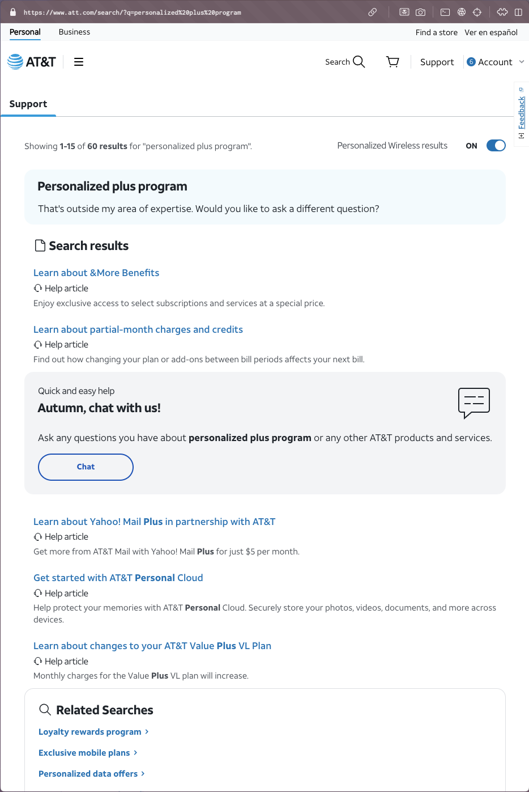
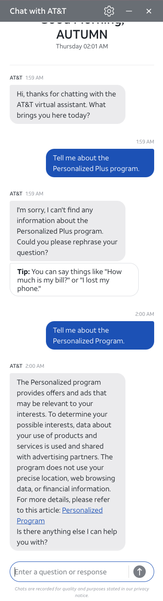
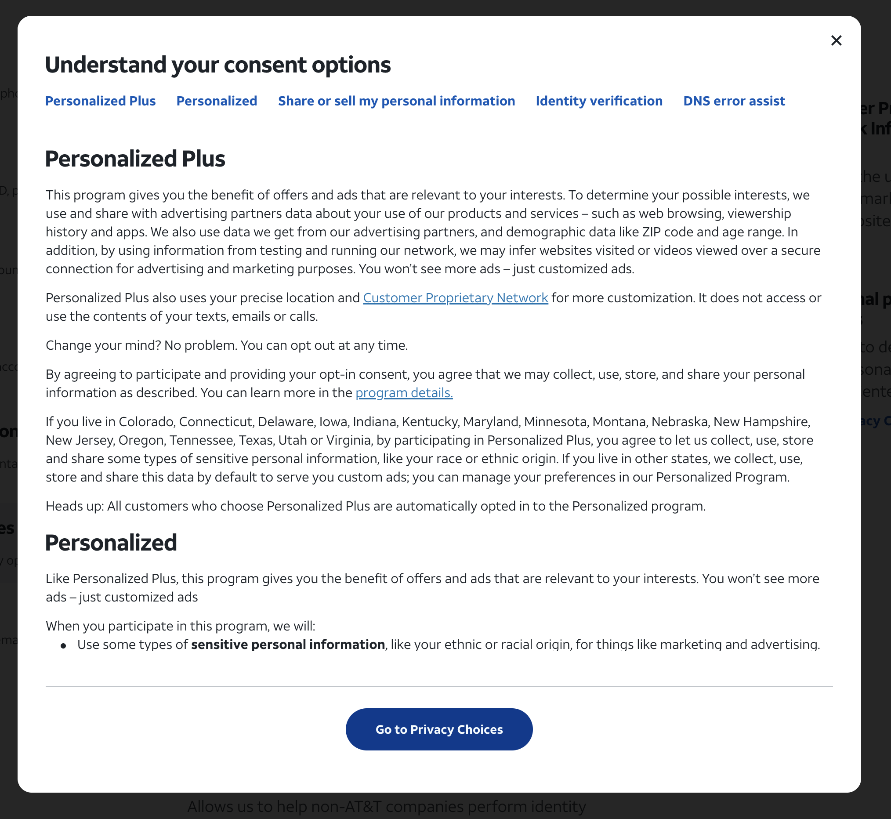
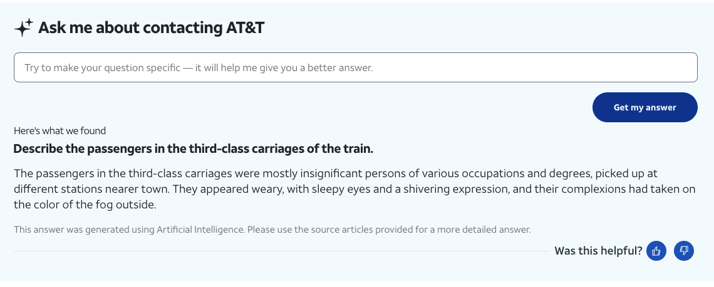
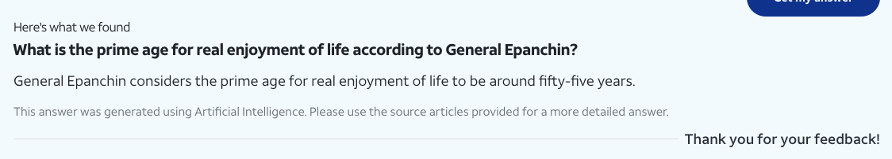

AT&T commenced the program seldom known as "Personalized Plus" on or about November 12, 2024. This program arose from a need to prove the acquisition of its customers’ consent to market and sell their realtime location data, up-to-date web history (gleaned even through secure connections) and "your race or ethnic origin." This is in addition to what they gain by exploiting your device identifiers to match you to your profiles built by other companies.

Prior to 2018, AT&T illegally abused their CPNI infrastructure for identical purposes. The Customer Proprietary Network Information easily identifies the time, place and destination of every phone call, text message, DNS request, and web resource handled on their network. AT&T sold precise location data on every customer and argued before a judge that it was legal. AT&T took more than 320 days to "cease" that practice.
Durably compromised by Chinese espionage since 2024, the systems which run calls, SMS and RCS are unsafe; None of these were encrypted protocols anyway. AT&T attests they do not use the contents of our communications, while they also claim the ability to guess at your traffic protected by SSL encryption, and can collect web traffic associated with you which did not originate from their own network.
AT&T authorizes the weaponization of AI and human labor against us, sharing the purposes of the ongoing Chinese espionage operation known as Salt Typhoon. AT&T’s “Personalized” program is not authorized to run in the following states: CO, CT, DE, IA, IN, KY, MD, MN, MT, NE, NH, NJ, OR, TN, TX, UT, and VA. As a remedy, they created “Personalized Plus” for the express purpose of operating “regardless of your state.”
For their own financial excess, AT&T invented “Personalized Plus” to satisfy its requirement to “report” our consent to its partners, but by opting us in automatically they have skipped the step of acquiring it. Every new and upgraded customer of AT&T is aggressively added to a mass surveillance program that no employee of the company or its subsidiaries has ever heard of, by name or function. The program has been running for more than 280 days.

The city of Fort Collins, CO began paying Placer Labs Inc for software infrastructure and services that provide our real-time location data. Less than one month after the "Personalized Plus" began its terms and conditions in current form, the same "precise location data" began to flow to the city's economic development team.
Ominously, AT&T’s AI support agent doesn’t even understand questions about the "Personalized Plus" program. For that matter, nor do its human employees. Across three support agents in two departments, none were aware the program existed. AT&T possesses a recording of a support call in which a representative proactively lies by default, for their own protection, that the program must not have launched yet.
I visited every AT&T store in Colorado to prove definitively that the representatives who sell us phones to our face are oblivious to the program. I have yet to find a human being in the state of Colorado who is aware of the program's existence.
Curiously, on day 281, support agents found themselves in possession of a script to read to me about the program. This information was verbatim what I supplied to every person I spoke with, face to face or over the phone. However, this newfound ability to reply made a scarce difference; Human agents over the phone ignored outright my careful requests for information about the program's start date, or when I had been forcibly opted into it without my knowledge. I successfully extracted a program effective date from just one employee, and I would never again locate another employee who could reproduce the same information.

[...] use automated decision-making, such as artificial intelligence, for things like marketing and advertising.
The catestrophic bad quality of AT&T support personnel ensures a degree of comprehension below that of the LLMs competing for their jobs. On the shrinking list of reasons to employ human beings is the weight of prior investment in human systems and training. Rest assured that new LLMs are already in training behind closed doors. There is no privacy law standing between an LLM and our "sensitive data." We know this because AT&T explains that "automated decision making" means the same thing as the program's plainly stated goals.
AT&T equivocates. In all their legal materials and explanations of rights, we are placated with words selected to conceal that which has not been listed. Furthermore, the sanitized legal terms presented to us use paragraphs to tell us what the "Personalized" program doesn't do—while those same descriptions apply exactly to the "Personalized Plus" program that they conceal.
Reckless unsupervised chat bots suppress vast quantities of tier-one web support. While on hold, AT&T makes clear their preference for using its various bots, without any human QA assistant making contact with the proximate cause of the phone call: Corporations enact their hostility on their captured customers to block subjects a la carte. Their ire is facilitated by the technology, and at scale. Yet because the input can be anything at all, such as the full unaltered text and license of a 55 megabyte Project Gutenberg book, the bots struggle as a matter of empirical fact.


Their terms begin with their most important lie: "You're in control." In their supplemental descriptions, they claim you can "change your mind," and "opt out at any time." What mind change could I possibly have if I never provided my consent to begin with? How can a support representative help me opt out if they don't know what the program is?
The unspoken terms of our data enslavement are these: You are opted into this program (among others) when you upgrade your device, by support representatives who have never heard of it, who claim that all necessary details are in one disclosure or another. Their retail and corporate office employees are not trained to know because it is an account-level control, which they have no in-store reason to access. Compare this with littany of compulsory CPNI disclosures they request.
Should you decline CPNI monitoring, "Personalized Plus" invalidates your preference. You are opted into this program (among others) when you upgrade your device, by support representatives who have never heard of it, who claim that all necessary details are in one disclosure or another. Their retail and corporate office employees are not trained to know because it is an account-level control, which they have no in-store reason to access. Compare this with litany of compulsory CPNI disclosures they request.
AT&T representatives are trained to confirm your physical address immediately after declining the CPNI disclosure they desire so persistently. When I asked why my various representatives had all started requesting confirmation of my address on day 281, I was told it was for... marketing and advertisement.
AT&T's selective understanding of consent is a willful act. For the digital abuse of every human being on their network, before we can find out what has happened, they pry and attack our human trust. They are trained, to a man, to socially engineer what they want from us. Nothing else matters. It is their fiduciary responsibility to relentlessly attack us, and without explanation.
Social engineering is not web terminology; To socially engineer is to use human behavior to manipulate for private goals. It is a premediated con job run against your amygdala.